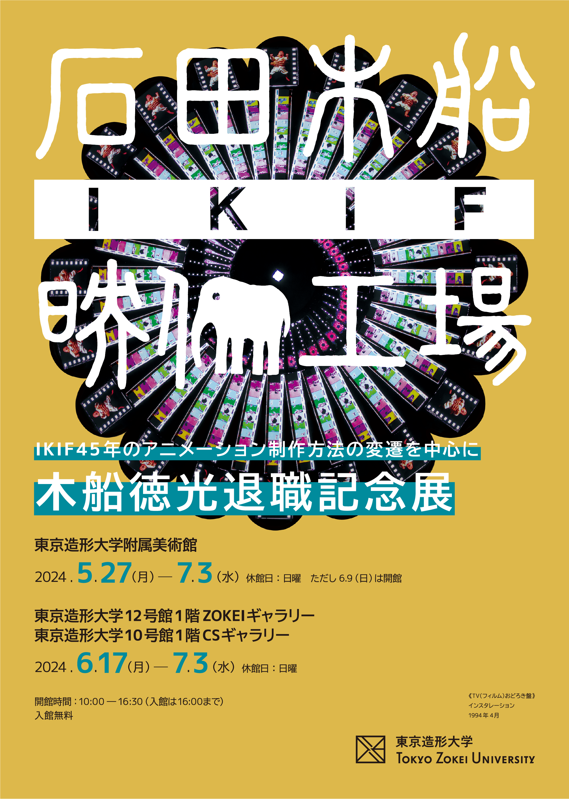
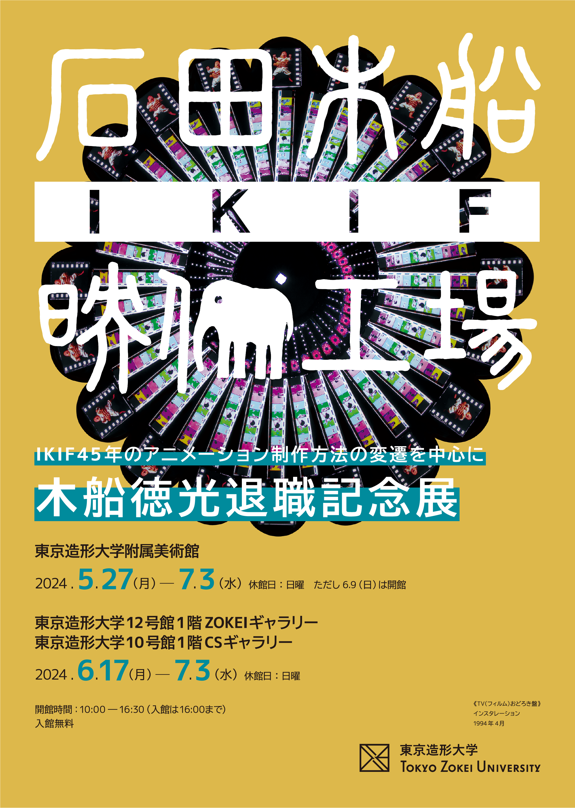

東京造形大学附属美術館では、2023年に退職を迎えた木船徳光教授の退職記念展を開催いたします。
木船徳光は、2001年より東京造形大学アニメーション専攻領域の教員として長年に渡り、後進の育成に携わるとともに、
自身の制作および木船園子とのユニットIKIFとして、アニメーション制作に取り組んできました。
本展は多くの卒業生を生み出した優れた教育者であり、表現し続ける作家でもある木船の活動の軌跡を紹介する展覧会です。
展覧会は美術館とギャラリーの3か所で構成されています。
美術館ではアナログからデジタルに移行してきた木船のアニメーション製作の裏側を、機材とともにご紹介します。
ZOKEIギャラリーでは学生の頃の作品から始まり、木船園子とIKIFを結成しユニットととして取り組んできたアニメーション作品を、
ＣＳギャラリーではこれまで制作したワークショップや体験型の作品をご紹介いたします。
会期中はイベントとして木船園子とのアーティストトーク、これまで携わってきた映像の上映会を行います。


-Introduction
本展は、大学生のころに石田（木船）園子と結成したアニメーション制作ユニット「IKIF」45周年の記念を兼ねた木船徳光の退職記念展である。そのため徳光部分が多くなっている。石田はおもちゃ会社に就職して企画デザインの仕事を7年続け、退職後もその関係の仕事をしばらくしていて、その仕事を通じてやれることの幅を広げていっていた。木船の方は印刷会社の企画室でデザインの仕事に就いたもののすぐに辞めて、いつの間にかデジタルアニメーション関係の仕事をするようになり、コンピュータの専門家のようになっていった。その間も個人的なアニメーション制作は続けていて、デジタルの部分が大きくなっていき、IKIF＋を設立するようになり仕事としてのアニメーションがIKIFの中心になっていった。しかし、ワークショップから始まった教育の仕事もアニメーションの個人的な制作も仕事としてのアニメーションも様々な上映活動も相互に影響しているので、それらすべてを含めた展示にすることにした。
-木船徳光プロフィール
1959年神奈川県生まれ。東京造形大学美術学科絵画専攻卒業。1979年に石田（木船）園子とアニメーション制作ユニット「IKIF」を結成。8ミリ、16ミリフィルムによる実験アニメーションの制作に始まり、ビデオ、デジタルに至る映像メディアの変遷と共に、映像インスタレーション、映像ライブ、商業アニメーションのデジタル・CG制作を行う。1997年よりCG制作スタジオ「株式会社IKIF＋（アイケイアイエフプラス）」を発足させ現在に至る。2001年より東京造形大学デザイン学科にてアニメーション教育・研究に携わる。2024年3月定年退職。 主な作品：『アニメーション百科』『CIRCLE』『回転AB』『阿耳曼陀羅（二）』『TVおどろき盤シリーズ』『ぶーばーがー』 CG制作を担当した作品：『機動警察パトレイバー the Movie』『BLOOD THE LAST VAMPIRE』『サクラ大戦 活動写真』『イノセンス』『映画ドラえもん のび太のワンにゃん時空伝』OP 『映画ドラえもん のび太の恐竜2006』など
美術館
アニメーション制作方法の変遷とIKIF作品
素材やスケッチ、メモ、上映会の企画書、チラシ、ポスター等を今回の企画のために整理し、まとめる作業をしていると、木船と石田の作業の区分けがつかないものが多数あった。
かわいいものは大体石田が描いたものだが、ラフなものやリアルなものはどちらのものか決定できないものがたくさんあった。
元々個人で制作して木船徳光の作品を作るのが嫌だったため、IKIFを設立してすべての創作物はIKIF名義で行うことを理想としていたので、45年かかって、それに近づいていったのかもしれない。
《乱PART2 RADIANCE》16ミリ 9分 1982年2月
《乱PART2 RADIANCE》16ミリ 9分 1982年2月
ZOKEIギャラリー
IKIFの活動とその基盤となった個々の活動
長年IKIFとして活動してきたが、IKIFの作品というには多少無理があるかな、というものをまとめて展示したいと思う。コレクションするつもりはないけど溜まってしまったアニメーション関係の資料や物、多分今回の展示が終わったら処分する予定の捨てることのできなかった昔の絵や、漫画。あまりに恥ずかしいものは中身を封印するけれど、制作に関わった薄い本、IKIFの個展や関わった上映会の記録、CG制作や3D監督として関わった作品のポスターやVHS/LD/DVD/BDなどの物、関わった学生の上映活動の記録等をまとめて展示をする。

《裸婦》木板 アクリル絵の具 1980年
CSギャラリー
色々やったが動きにはこだわっていた。
映像の原理をテーマにした作品や、拡張映画のような方向のものをまとめた。アニメーション作品を作り続けるうちに、いつの間にかその方向の作品が増えていった。アニメーション専攻領域の助手に「一時期俺、現代アーティストだったんだよな」と冗談で言ったことがあるのだが、いつもの嘘と思われ流されてしまったが、いつもの嘘と同じで針小棒大の針くらいの根拠はあったと思う。デジタル化が進むにつれリアルタイムに表現するパフォーマンス的な表現も増えていった。
《ビデオ魔鏡》インスタレーション 1993年
《コラボアート縁》イベント 1998年10月
-Event
アーティストトーク
| 日 時： | 2024年6月20日（木）13：30-15：00 |
|---|---|
| 会 場： | 東京造形大学附属美術館 |
| 登壇者： | IKIF（木船徳光+木船園子） |
事前申込不要・参加費無料。参加ご希望の方は上記の日時に会場にお集まりください。
《写真の多実三の写真》デジタル 2024年6月
IKIFの講演会と上映会
講演会ではIKIF＋とIKIFの関係について作例を交えながら話をします。
上映会は最後かもしれない8ミリフィルムの上映と、プリントしたけどまだ一回も上映をしていないフィルムを含めた16ミリフィルムの上映と、新作を含んだデジタル上映をやります。
参加費無料・要事前申込。
| 日 時： | 2024年6月22日（土）
講演....13：00-15：00 上映....15：00-17：00 途中休憩あり |
|---|---|
| 会 場： | 東京造形大学1号館102教室 |
| 登壇者： | IKIF（木船徳光+木船園子） |
| 申 込： | 参加ご希望の方は、下記申込フォームよりお申込みください。
▶︎お申込みこちら 参加ご希望の方は、下記内容をご記入の上、「museum@zokei.ac.jp」までお送りください。 ご記入いただいた情報はイベントの申込以外の目的では使用いたしません。 件名「木船徳光退職記念展 イベント申込」 1. お名前（フリガナ） 2. メールアドレス 3. 電話番号 4. 参加人数（本人含む） 5. ご住所（木船徳光に関する展覧会のお知らせを希望する方のみご記入ください） イベントに関するご連絡はメールで行います。 museum@zokei.ac.jpからの連絡を受信できるよう設定をお願いいたします。 |
Access
東京造形大学
| 住所： | 〒192-0992 東京都八王子市宇津貫町1556 |
|---|---|
| TEL： | 042-637-8111 |
| 交通： | JR横浜線相原駅よりスクールバス5分・徒歩15分
当館には専用駐車場がありませんので、公共交通機関をご利用ください。 |
| 詳細： | アクセス |